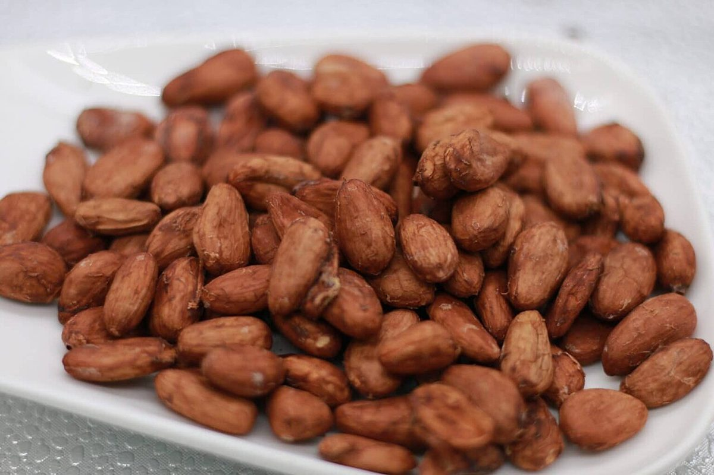

大玉
大玉 : 場所と連絡先
所在地は〒759-4106 山口県長門市仙崎１４２８−１。電話は 090-8068-2467 です。確認できているのは、この2つとInstagramだけです。
カフェ / 山口県長門市
山口県長門市のカフェ「SNOW DRIP COFFEE」のご案内ページです。営業時間やメニューなど、詳しいことは準備中。まずはInstagramをのぞいてみてください。

制作側の連想
店名の由来は分かりません。このサイトは制作側が「SNOW(雪)」「DRIP(したたる)」「COFFEE(コーヒー)」という3つの語から、丸を大・中・小と3つ重ねた雪だるまの置物のような形を連想して作ったものです。お店の理念や由来とは無関係な、制作側の連想です。お店が雪だるまの意匠を使っているかどうかも分かりません。
三つ玉でご案内
所在地は〒759-4106 山口県長門市仙崎１４２８−１。電話は 090-8068-2467 です。確認できているのは、この2つとInstagramだけです。
営業時間・定休日・メニュー・価格・ご予約・駐車場は 準備中 です。分かり次第、お知らせします。
最新の情報は Instagram @yatai_snowdrip でご確認ください。
丸くて小さなもの(イメージ)
写真は物や食材のイメージで、国外・撮影地不明のフリー素材です。お店の商品や店内ではありません。



ご案内
| 所在地 | 〒759-4106 山口県長門市仙崎１４２８−１ |
|---|---|
| 電話 | 090-8068-2467 |
| 営業時間 | 準備中 |
| 定休日 | 準備中 |
| ご予約 | 準備中 |
| 駐車場 | 準備中 |
| SNS | Instagram @yatai_snowdrip |